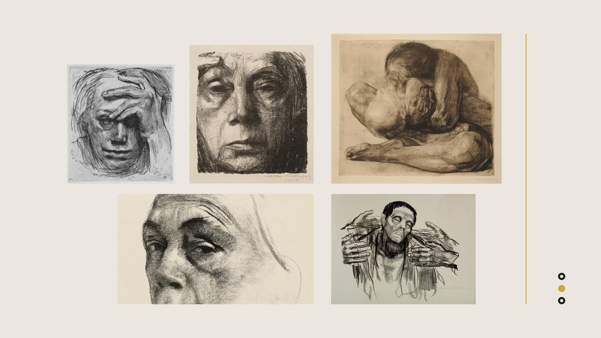

Kathe Kollwitz Self-Portrait Recreation
Vine & compressed charcoal on paper, 9.5" x 13.5"
One of my projects for my Drawing 1 course at Binghamton University included researching and recreating a piece from a renowned artist. I chose Kathe Kollwitz, who was born in Konigsberg, Russia in 1867. Kollwitz is known for her drawings that depict the stark reality of war and its victims: rebellion, poverty, and loss. She lived during the World Wars and era of the birth of abstraction, and lost her son during the World War in 1914. The theme of her drawings were social protest and anti-war sentiment. Kollwitz additionally focused on women and the working class, amidst a world dominated by men. Her drawings are naturalistic, simplied with bodly accentuated forms, with a dark and solemn aesthetic. I recreated one of her self-portraits, one of several she created which evoke emotions of grief and mourning.